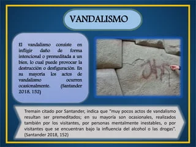

Amenazas al patrimonio cultural
El patrimonio cultural puede estar en peligro por diversas amenazas, como la falta de financiación, la falta de mantenimiento, la contaminación, el cambio climático, los conflictos armados, el vandalismo, los robos y la falta de sensibilización. La comprensión de estas amenazas es fundamental para identificar las soluciones adecuadas de conservación y protección.
